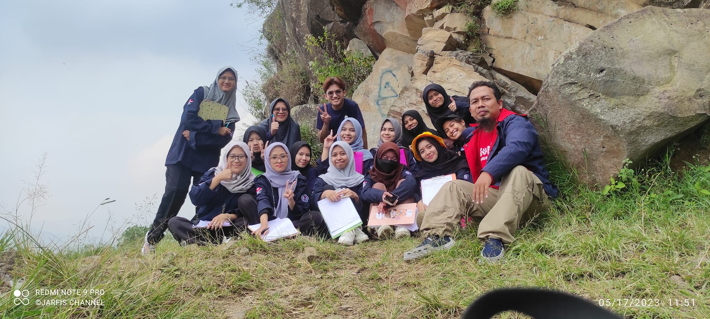

02 // WORKFLOW
I come in three main flavours
Reflecting the core distinct areas of my academic and scientific workflow

Field Mode

Lab Mode

Educator & Geophysicist
I’m a geoscientist and educator with a deep focus on near-surface and environmental geophysics. I investigate subsurface structures and dynamic earth processes across Indonesia to solve critical environmental challenges and mitigate geological hazards. With a strong background in geoelectrical exploration, gravity methods, and magnetic field analysis, my work bridges the gap between field-based observations and computational physics.
Currently, I am a faculty member and researcher in the Physics Program at Universitas Pendidikan Indonesia (UPI), where I combine teaching, tool reconstruction, and advanced data processing to train the next generation of scientists. Beyond research, I am actively engaged in the academic ecosystem as the Managing Editor for Wahana Fisika, advocating for rigorous and accessible scientific publishing.
Reflecting the core distinct areas of my academic and scientific workflow
Identifying structural sliding zones and mapping high-risk areas using geoelectrical resistivity layouts and Fault Fracture Density (FFD) models.
Delineating complex underground features such as graben structures, volcanic areas, fault systems, and hidden subterranean cavities using gravity and magnetic susceptibility.
Mapping groundwater contamination pathways near municipal landfills by combining chemical-geochemical datasets with 2D electrical resistivity tomography.
Exploring the intersection of atmospheric variables during solar eclipses and optimizing IMRAD-based writing competencies for STEM teachers.
Exploring the intersection of remote sensing systems, structural geospatial factor analysis, and deep-ground geophysical profiling to achieve highly accurate terrain models.
Explore software implementations, scripts, data models, and active research repositories.
IPC-SINAFI is an annual scientific event organized by the Physics and Physics Education Study Programs of Universitas Pendidikan Indonesia (UPI). It serves as an active open forum for academics, researchers, educators, and students to disseminate progress and debate recent developments in the discipline.
The International Physics Conference (IPC) series debuted in 2024 in conjunction with the 10th Seminar Nasional Fisika (Sinafi), continuing collaboratively alongside the Indonesian Physics Society (PSI) West Java region.
A peer-reviewed journal offering a venue to publish rigorous research regarding foundational physics principles and practical applied physics. Published biannually (June and December) by the Physics Study Program, Universitas Pendidikan Indonesia in collaboration with Perkumpulan Pendidik IPA Indonesia (PPII).
Open Journal SystemUniversitas Pendidikan Indonesia (UPI), Indonesia
Institut Teknologi Bandung (ITB), Indonesia
Universitas Pendidikan Indonesia (UPI), Indonesia
Field-based Geothermal Exploration in Green Field Areas — ITB-GFZ Potsdam Germany
Systems, Technology, Site Selection & Geoscience Data Evaluation — USAID – University of Southern California – Star Energy – ITB
Managing Editor & Journal Manager — Wahana Fisika Journal
Digital Talent Scholarship - Pandu Indonesia UMKM — Kominfo & Micromentor
Achmad, A. R., Asmoro, C. P., Ardi, N. D., Ramayanti, S., Park, S., Lee, K. J., … Lee, C. W. (2026). Land subsidence through ICOPS time-series coupled with metaheuristic optimized CNN-based susceptibility mapping: a case study in Bandung, Indonesia. Geomatics, Natural Hazards and Risk, 17(1).
DOI: 10.1080/19475705.2026.2690851Ardi, N. D., et al. (2026). Prediction of Flood Susceptibility in West Java, Indonesia Based on Geospatial Factor Analysis and Machine Learning Models. Korean Journal of Remote Sensing.
DOI: 10.7780/kjrs.2026.42.1.10Iryanti, M., Ardi, N. D., & Team. (2026). Landslide susceptibility mapping based on K-Means and Self-Organizing Map clustering with Geographic Information System in Tasikmalaya, West Java. Journal of Degraded and Mining Lands Management.
DOI: 10.15243/jdmlm.2026.131.9355Fratiwi, N. J., Arifiyanti, F., Samsudin, A., Ardi, N. D., & Suhandi, A. (2025). Strengthening research writing competencies in physics and biology teachers: A practical imrad-based guide. Bubungan Tinggi: Jurnal Pengabdian Masyarakat.
DOI: 10.20527/btjpm.v7i3.14554Kurniawan, R., Ardi, N. D., & Hidayat, H. (2019). Analisis Penampang Resistivitas 2D Metode Magnetotellurik dan Audio-magnetotellurik untuk Mengetahui Sistem Petroleum pada Cekungan Singkawang. Wahana Fisika.
DOI: 10.17509/wafi.v4i2.21869Ardi, N. D., Iryanti, M., Agustine, E., Asmoro, C. P., Yusuf, A., Sundana, A. N. A., ... & Sumarni. (2019). Monitoring of rainfall infiltration to under surface using DC resistivity method. Journal of Physics: Conference Series, 1280(2).
DOI: 10.1088/1742-6596/1280/2/022063Safura, H. Y., Djaja, A. W., Ardi, N. D., & Wijaya, P. H. (2019). Application of Kirchhoff prestack time migration method of the 2D marine seismic data for mapping the subsurface structures in dip case Southern Aru, West Papua, Indonesia. stream. Journal of Physics: Conference Series, 1280(2).
DOI: 10.1088/1742-6596/1280/2/022059Ardi, N. D., Iryanti, M., Asmoro, C. P., Yusuf, A., Sundana, A. N. A., Safura, H. Y., ... & Sumarni. (2018). Geoelectric imaging for saline water intrusion in Geopark zone of Ciletuh Bay, Indonesia. Journal of Physics: Conference Series, 1013(1).
DOI: 10.1088/1742-6596/1013/1/012185Ardi, N. D., Iryanti, M., Asmoro, C. P., Nurhayati, N., & Agustine, E. (2018). Mapping landslide potential area using fault fracture density analysis on unmanned aerial vehicle (UAV) image. IOP Conference Series: Earth and Environmental Science, 145(1).
DOI: 10.1088/1755-1315/145/1/012010Ferahenki, A. R., Ardi, N. D., Heditama, D. M., & Muttaqin, Y. A. (2018). Aplikasi pemograman inversi 2D menggunakan Matlab® pada data resistivity. Proceedings of the Universitas Negeri Surabaya Physics Seminar (Vol. 2).
View Proceedings PortalCaptured visual briefs from recent geophysical workflows

Subsurface Resistivity Data Collection

Laboratory Data Processing & Analysis

Lecture & Physics Discussion Session
| No | Day & Time | Course Title | Room & Building | Class |
|---|---|---|---|---|
| 1 |
Tuesday
07:00 - 09:30
|
FI582
3 Credits
K-2018
GEOPHYSICAL DATA ANALYSIS
|
Space & Earth Science Lab N 220 JICA FPMIPA A Building, 2nd Floor |
FIS-7
Cap: 30
|
| 2 |
Tuesday
13:00 - 15:30
|
FI407
3 Credits
K-2024
GEOPHYSICAL EXPLORATION
|
Space & Earth Science Lab N 220 JICA FPMIPA A Building, 2nd Floor |
FIS-5AB-GEO
Cap: 30
|
| 3 |
Tuesday
15:30 - 18:00
|
FI564
3 Credits
K-2018
GEOPHYSICAL EXPLORATION
|
Space & Earth Science Lab N 220 JICA FPMIPA A Building, 2nd Floor |
FIS-7
Cap: 30
|
| 4 |
Wednesday
13:00 - 14:40
|
FI209
2 Credits
K-2024
INFORMATION & COMMUNICATION TECHNOLOGY
|
FPMIPA Lecture Room (E - 405) JICA FPMIPA A Building, 4th Floor |
FIS-3AB
Cap: 85
|
| 5 |
Wednesday
15:30 - 17:10
|
FI340
2 Credits
K-2024
PHYSICS OF VOLCANO
|
FPMIPA Lecture Room (E - 405) JICA FPMIPA A Building, 4th Floor |
FIS-3AB
Cap: 85
|
| 6 |
Thursday
10:20 - 12:00
|
FI505
2 Credits
K-2018
METEOROLOGY & SPACE WEATHER
|
Electronics Lab N 305 JICA FPMIPA A Building, 3rd Floor |
FIS-7
Cap: 30
|
| 7 |
Thursday
13:00 - 15:30
|
FI202
3 Credits
K-2024
ALGORITHMS & PROGRAMMING
|
Physics Computation Lab B 407 FPMIPA B Building, 4th Floor |
FIS-1B
Cap: 45
|